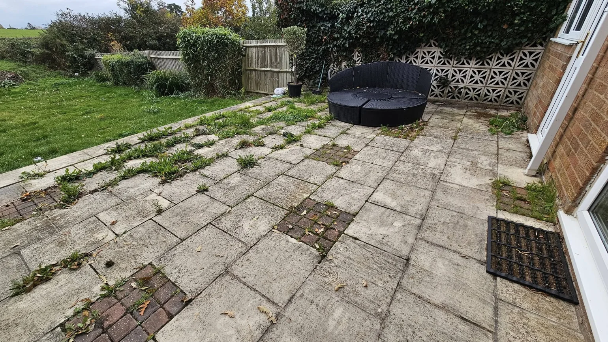
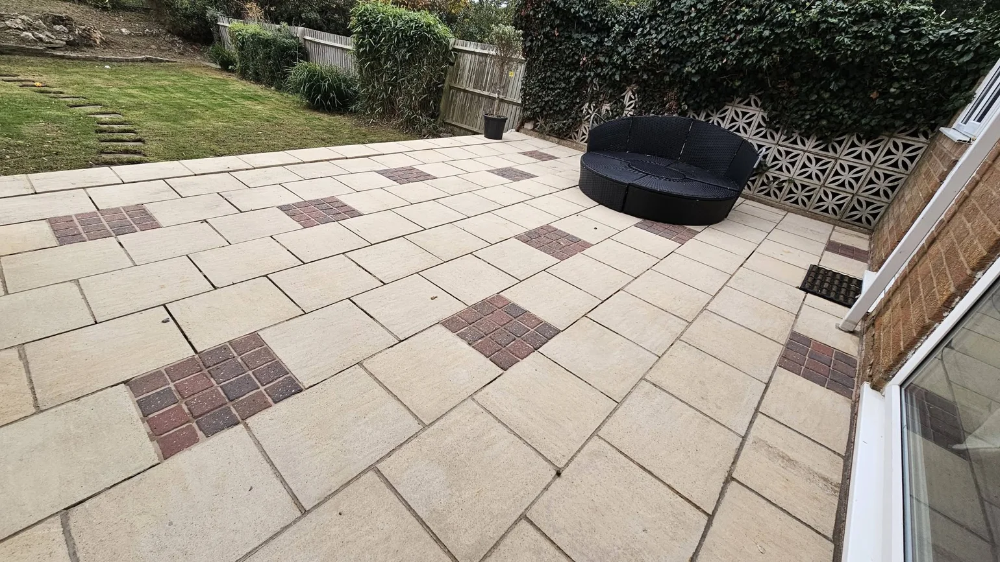
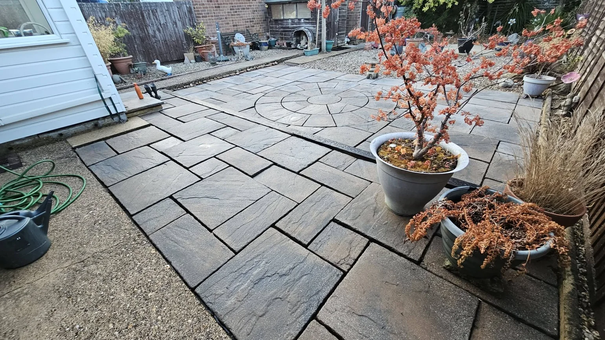
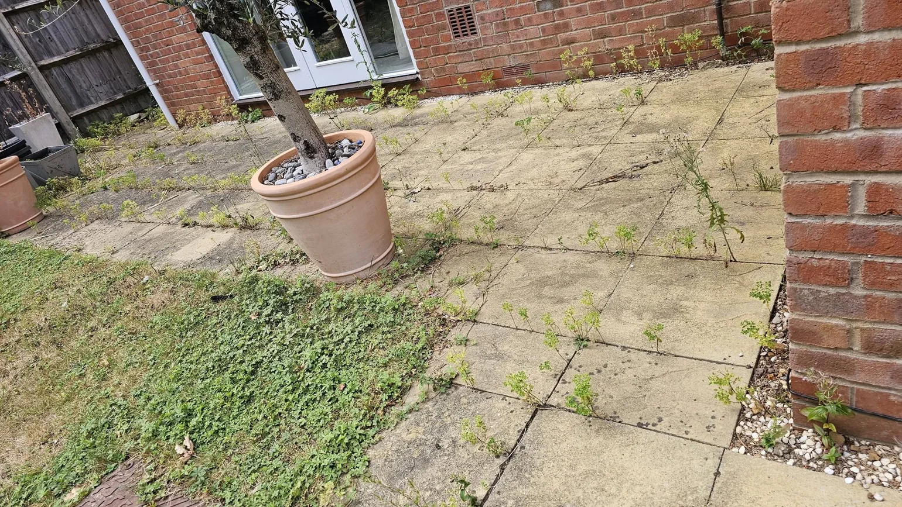
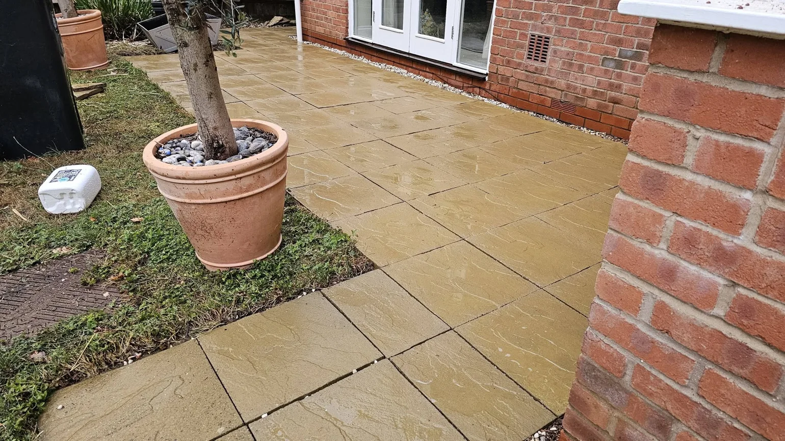
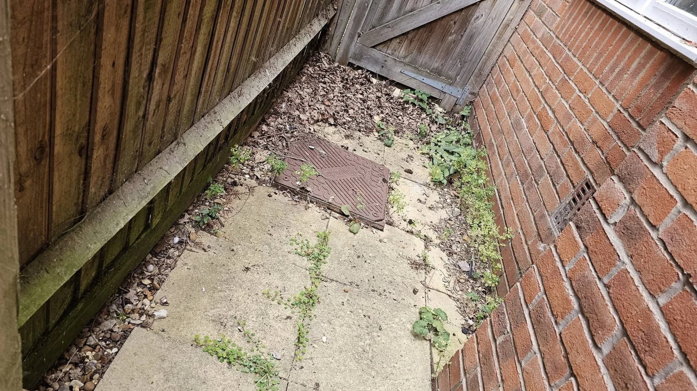
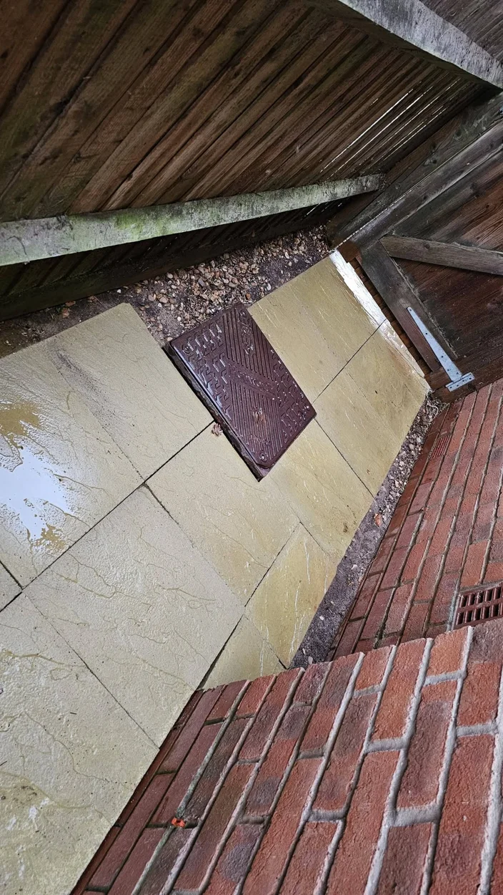

Garden patio



SRP · NORTHAMPTONSHIRE
Photographs from SRP’s exterior cleaning work.
BEFORE & AFTER
See what changed on three SRP projects.






PROJECT PHOTOS
Select a photo to see it full size.
REQUEST A QUOTE
Tell us your postcode, what needs cleaning and roughly how large the area is. You can add photos in WhatsApp before you send your message.